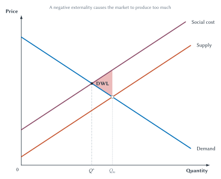
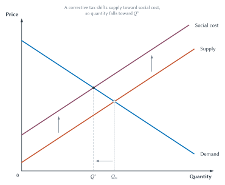
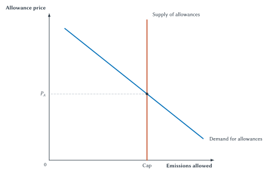
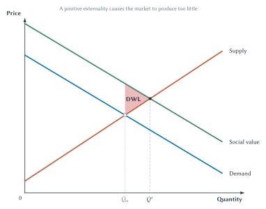
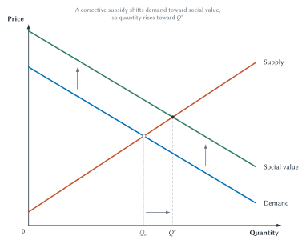
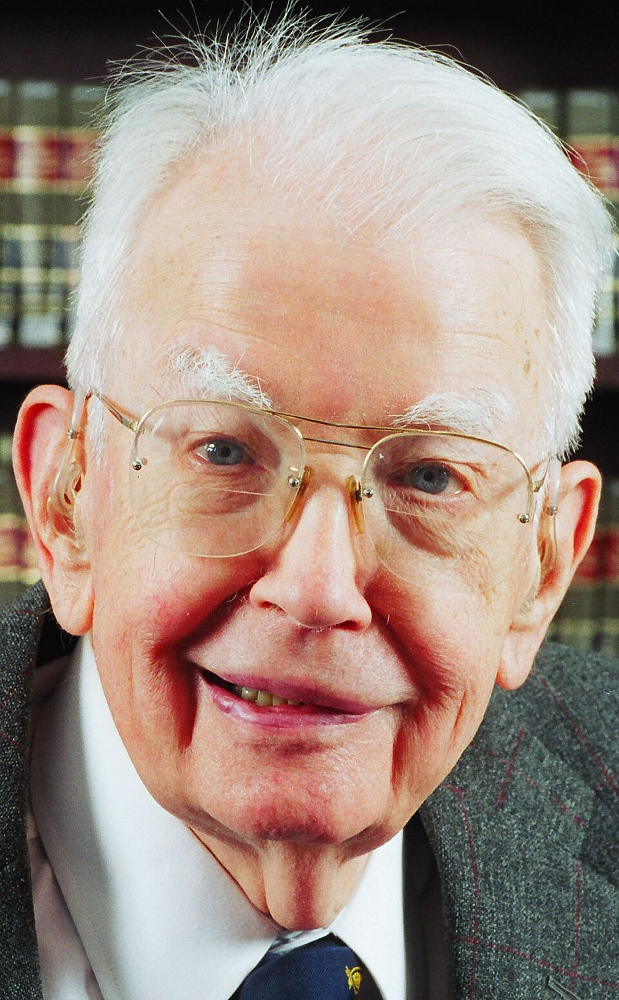

Chapter 10
Externalities and Property Rights
Externalities arise when private choices impose costs or create benefits that market prices do not fully reflect.
A factory produces paper that customers value. It hires workers, purchases wood and energy, and pays for machinery. Those costs enter the factory’s decisions and the price of paper.
Now suppose the factory also releases waste into a lake. People living nearby lose swimming, fishing, or drinking-water opportunities. If the factory does not have to pay for that harm, the market price of paper leaves out part of the cost created by production.
The factory’s output is still valuable. The workers, owners, and customers are not imaginary. But the damage to other users of the lake is real too. A market calculation that includes one side and omits the other can lead to too much production and pollution.
The reverse problem also occurs. A person who receives a vaccination may protect herself and reduce the chance that she infects others. A researcher may create knowledge that other firms and researchers can use. If the decision-maker receives only part of the benefit, the market may produce too little of the activity.
These effects are called externalities. The standard economic model asks how omitted costs or benefits change the efficient quantity. That is the first half of this chapter.
The second half asks a deeper question: why is the effect omitted, and what arrangement might bring it into the decision? A tax, subsidy, regulation, legal right, bargain, organization, or social norm can sometimes change the incentives. Each requires information, monitoring, and enforcement. None works simply because we have attached the word externality to a problem.
Quick Concept
Externality
An externality exists when an action affects others in a way not fully reflected in the decision-maker’s private costs or benefits.
Costs And Benefits Outside Market Prices
Not every effect on another person is an externality. Markets constantly connect people through prices. If a popular restaurant buys more tomatoes and the price of tomatoes rises, other buyers may pay more. That effect works through the market price. Buyers and sellers see it when they make decisions.
An externality operates outside that market calculation. The factory pays for labor and fuel but not necessarily for harm to people downstream. A homeowner enjoys a well-kept garden but may not receive payment for the pleasure neighbors receive from seeing it. The important feature is not merely that someone else is affected. It is that the effect is missing from the costs or benefits faced by the decision-maker.
An external cost is a cost imposed on others outside the transaction. Pollution, noise, secondhand smoke, and traffic congestion can create external costs.
An external benefit is a benefit received by others outside the transaction. Disease prevention, new knowledge, and attractive neighborhood upkeep can create external benefits.
Economists combine the effects with the private calculation:
- Private cost is the cost faced by the person or firm making the choice.
- Social cost is private cost plus costs imposed on others.
- Private value is the benefit received by the person making the choice.
- Social value is private value plus benefits received by others.
The word social does not mean government-owned or morally approved. It means that the calculation includes everyone affected.
The curves in this chapter continue the logic of Chapter 6. The height of demand shows the value buyers place on one more unit. The height of supply shows the cost sellers face to provide one more unit. When an externality exists, we add the omitted effect to one of those familiar curves. The diagrams use the full labels Demand, Supply, Social cost, and Social value.
With those distinctions in place, return to the polluting factory.
Negative Externalities And Overproduction
A negative externality exists when an activity creates an external cost. Suppose each additional unit of paper creates some pollution damage that the factory does not pay.
The Supply curve in Figure 10.1 reflects the factory’s private production cost. The Social cost curve adds the external damage. Social cost therefore lies above Supply.
The unregulated market follows Demand and Supply. Those curves intersect at the market quantity \(Q_m\). Buyers value the last market unit as much as the factory’s private cost of producing it.
But private production cost is not the full cost. When the pollution damage is included, Demand intersects Social cost at the smaller quantity \(Q^*\). That is the efficient quantity in the diagram.

Figure 10.1. A negative externality causes the market to produce too much. The market stops at \(Q_m\), but efficiency requires the smaller quantity \(Q^*\) where Demand equals Social cost.
Why is the triangle deadweight loss? Examine the units between \(Q^*\) and \(Q_m\) one at a time. Buyers value each unit enough to cover the factory’s private cost, so the private market produces it. But once pollution damage is added, the full social cost exceeds the buyer’s value. Producing the unit destroys more value elsewhere than it creates for the buyer.
The triangle adds those losses across all the overproduced units. It is the same lost-gains logic used in earlier chapters. The difference is that the market now includes trades whose full cost is greater than their value.
Key Point
The Lost-Gains Logic Is The Same
With a negative externality, the market includes units whose full social cost exceeds their value. With a positive externality, the market omits units whose social value exceeds their cost. In both cases, deadweight loss is lost total surplus.
The Efficient Amount Is Not Necessarily Zero
Calling pollution harmful does not prove that the efficient quantity of paper is zero. Paper has value. Eliminating the last unit of pollution may require eliminating valuable production or using extremely costly controls.
Efficiency calls for producing as long as the value of one more unit exceeds its full social cost. In Figure 10.1, units up to \(Q^*\) pass that test. Units after \(Q^*\) do not.
This point matters for many externalities. The efficient number of cars on a road is not necessarily zero. The efficient amount of airport noise is not necessarily zero. The goal is to balance additional value against additional social cost, not to remove every trace of an unwanted effect regardless of cost.
The market does not make that balance on its own when the external cost is omitted. That raises the practical question: what can be done?
Externalities As Market Failure
Chapter 6 showed why competitive markets can maximize total surplus. That result depends on buyers and sellers facing the relevant benefits and costs of their choices.
Pollution breaks that connection. The factory sees its own production costs but not the full cost imposed on people using the lake. The resulting market quantity does not maximize total surplus. Economists call this a market failure: the market, left on its own, does not reach the efficient outcome.
This does not mean the entire market has stopped working. Buyers still value paper, and the factory still responds to costs and prices. The failure is specific: one important cost is missing from the decision. The deadweight-loss triangle in Figure 10.1 shows the resulting loss.
Identifying a market failure creates a possible case for government action. It does not yet tell us which policy will work best.
Policies can respond to an externality in two broad ways. Government can directly limit the harmful activity. Or it can change private costs and benefits so that decision-makers internalize the externality, which means bringing the outside cost or benefit into the decision. Command-and-control regulation takes the first approach. Corrective taxes and tradable allowances take the second.
Government Regulation: Command And Control
One response to pollution is to place direct legal limits on emissions. Governments do this through environmental laws and agencies such as the Environmental Protection Agency.
Once the government chooses direct regulation, the regulator must decide how much pollution reduction to require. In principle, the regulator should compare the benefit of one more unit of cleanup with its cost. Additional cleanup is worthwhile as long as its benefit exceeds its cost.
That comparison is difficult in practice. No one hands the regulator the two values. The regulator must estimate the health and environmental benefits of cleaner air or water and the costs firms will bear to achieve them. A standard that is too weak leaves valuable cleanup undone. A standard that is too strict can cost more than the harm it prevents. Command-and-control regulation does not remove this information problem. It places more of the decision about the target and the method in the regulator’s hands.
Many traditional environmental rules are called command-and-control regulation. The name refers to rules that tell polluters what standard they must meet. A technology standard may require a particular pollution-control method or production process. A performance standard sets an emissions limit but allows the firm to choose how to meet it. Governments may also ban or phase out especially harmful substances.1
These rules can be useful. A clear limit may be easier to understand and enforce, especially when pollution is highly dangerous or damage depends heavily on location. But command-and-control rules can also be costly. Firms often have very different costs of reducing pollution. Requiring every firm to use the same technology or make the same reduction can ignore those differences.
A firm also has little reason to reduce pollution beyond the required standard. Once it complies, the rule usually provides no additional reward for finding a cleaner method. That loss of flexibility and continuing incentive explains why economists often look for another approach.
Why Economists Prefer Market-Based Solutions
Economists often prefer a market-based policy when emissions can be measured and firms have different pollution-control costs. The government still must estimate the harm, choose a tax or emissions cap, monitor emissions, and enforce compliance. A market-based policy does not automatically reveal the efficient target.
What changes is who decides where and how pollution is reduced. Firms are allowed to respond using their own knowledge of their equipment, inputs, and cleanup costs. The regulator does not have to determine the exact reduction method for every plant.
Suppose one power plant can reduce emissions cheaply while another faces very high cleanup costs. A uniform rule may require the same reduction from both. A market-based policy gives the low-cost plant a reason to reduce more and the high-cost plant a reason to reduce less. The environmental goal can then be reached at a lower total cost.
A market-based policy also makes the tradeoff more explicit. Under a tax, emitting requires a payment. Under cap and trade, emitting uses an allowance that has market value. Either way, reducing pollution saves money, and firms have a reason to search for less costly cleanup methods.
Market-based policies also provide an ongoing reward for innovation. A firm that discovers a cheaper way to reduce pollution can keep saving money rather than merely meeting a fixed rule. The EPA identifies emissions taxes and tradable allowances as two important market-based approaches.2
This preference is not absolute. Direct limits may be better when emissions create severe local damage, when even a small amount is dangerous, or when trading could concentrate pollution in one place. The useful comparison is between tools for a particular problem, not between a perfect market and a perfect regulation.
Corrective Taxes And The Chapter 7 Reversal
Using a tax to improve efficiency may seem to conflict with Chapter 7. There, an ordinary tax in an otherwise efficient market reduced quantity and prevented some trades whose value exceeded their cost. But the starting point matters.
With a negative externality, the unregulated market already produces too much. A corrective tax raises the private cost of the activity to reflect the external harm. It is also called a Pigovian tax, after economist A. C. Pigou’s work on differences between private and social costs.3
Return to Figure 10.1. The Supply curve showed the factory’s private cost. Social cost was higher because it also included the pollution harm imposed on others. The distance between the two curves represented the external cost.
A corrective tax can close that gap. If the tax equals the external cost created by one more unit, the cost faced by the factory rises to the full social cost. In the simplified diagram, Supply shifts to Social cost and quantity falls from \(Q_m\) to \(Q^*\). The tax does not eliminate all pollution. It internalizes the externality by making the factory account for the harm in its decisions.

Figure 10.2. A corrective tax can move quantity toward the efficient level. By making the external cost part of the private decision, the policy reduces quantity from \(Q_m\) toward \(Q^*\).
The tax does not make pollution costless or harmless. It changes incentives. A firm can reduce output, install cleaner equipment, change inputs, redesign production, or pay the tax. Firms with cheap ways to reduce harm will do more of the adjustment, while firms facing high adjustment costs may continue some pollution and pay more. That is the flexibility described in the previous section: the policy sets a price but does not require every factory to make the same change.
Key Point
A Corrective Tax Reverses The Ordinary Tax Story
When a market already produces too much because it omits an external cost, a properly chosen tax can reduce deadweight loss by moving quantity toward the efficient level.
The word properly is doing important work. Knowing that pollution exists does not reveal the external cost of one more unit. Damage may depend on location, weather, timing, population exposure, and the available substitutes. Regulators must measure the activity, identify the responsible party, collect the tax, and prevent avoidance.
A corrective tax can improve efficiency and still be unpopular. Consumers may pay higher prices, while nearby residents receive cleaner air or water. A gasoline tax makes the tension easy to see. A person may want less pollution yet recoil when the policy raises the price at the pump. That response does not erase the environmental benefit. It makes the cost of achieving it visible. Pollution reduction uses real resources, and support for it may change when people must pay part of the bill. The government receives revenue, but whether that revenue is returned to households or spent elsewhere is a separate policy choice.
A gasoline tax is not merely a punishment imposed on an oil company. Much of the pollution occurs when drivers burn the fuel. Even if the tax is legally collected from a producer or refinery, some of it may reach consumers through higher prices. That price increase is part of the policy’s purpose: drivers have a reason to use less fuel, choose more efficient vehicles, or consider alternatives. Producers also have a reason to develop cleaner products and production methods. Recall Chapter 7: legal incidence and economic incidence are different. The economic question is not simply whom to blame. It is which decisions must change if pollution is to fall.
Common Mistake
Corrective Policy Requires Information
Knowing that an externality exists does not reveal the right tax, subsidy, standard, or quantity. Policymakers still need information about the size of the effect, behavior, monitoring, enforcement, financing, and unintended consequences.
Cap And Trade
A corrective tax puts a price on pollution and lets firms decide how much to emit. A cap-and-trade program reverses those roles: the government fixes the total quantity of emissions and allows a market to determine the price.
The government first sets an emissions cap. It then creates a matching number of permits, usually called allowances. A firm must hold one allowance for each unit it emits. Allowances may initially be auctioned or distributed, but firms are allowed to buy and sell them.
Figure 10.3 shows the resulting allowance market. The vertical Supply of allowances represents the fixed cap. Demand comes from firms that value the right to emit because reducing their pollution would be costly. Their interaction determines the allowance price.

Figure 10.3. A cap fixes total emissions while trading determines the allowance price. Firms must either reduce their emissions or obtain enough allowances to cover them.
A firm will reduce pollution when doing so costs less than buying an allowance. A firm with high cleanup costs will prefer to buy an allowance. Trading therefore directs more of the pollution reduction toward firms that can achieve it cheaply. The total quantity of emissions remains limited by the cap.
The EPA’s Acid Rain Program provides a major U.S. example. Its sulfur-dioxide program capped total emissions from electric generators, required an allowance for each ton emitted, and allowed sources to buy, sell, or save allowances.4
Key Point
A Tax Sets The Price; A Cap Sets The Quantity
A corrective tax sets the price paid for pollution and allows the quantity of emissions to adjust. Cap and trade fixes the total quantity of emissions and allows the permit price to adjust.
In the simplified case in which the regulator knows exactly how firms will respond, the two policies can be designed to reach the same emissions level. The regulator can choose a cap and observe an allowance price, or set a tax equal to that price and produce the same reduction.
With incomplete information, the choice matters. A tax prevents the price of emitting from rising above the tax, but total emissions may be higher or lower than expected. A cap guarantees the emissions quantity, but the allowance price may be higher or lower than expected. A cap may be more attractive when exceeding an emissions limit could cause especially serious harm. A tax may be more attractive when cleanup costs are highly uncertain and an unexpectedly large cost increase is the greater concern. Neither policy eliminates the need to estimate damages and cleanup costs.
Cap and trade can also raise government revenue. The government may auction the allowances rather than give them away. If allowances are distributed without charge, the recipients receive valuable assets. Even a freely received allowance has an opportunity cost: using it means giving up the money the firm could receive by selling it. The initial allocation therefore affects who receives the value, while the market price still gives firms an incentive to reduce emissions.
Neither approach runs by itself. Regulators must measure emissions, track allowances or tax payments, punish violations, and decide how strict the tax or cap should be. Trading is also less attractive when the location of emissions matters because trades may concentrate pollution in heavily exposed communities.
Negative externalities cause the market to include too many units. Positive externalities create the mirror-image problem.
Positive Externalities And Underproduction
A positive externality exists when an activity creates an external benefit. Consider vaccination against an infectious disease. The vaccinated person may reduce her own chance of becoming ill. She may also reduce the chance of transmitting the disease to other people.
The private benefit appears in Demand. The benefit to others does not. Social value equals the private value plus the external benefit, so Social value lies above Demand.
The private market follows Demand and Supply and reaches \(Q_m\). Once the external benefit is included, Social value intersects Supply at the larger quantity \(Q^*\).

Figure 10.4. A positive externality causes the market to produce too little. The market stops at \(Q_m\), but the additional benefit to others makes the larger quantity \(Q^*\) efficient.
Again, read the triangle unit by unit. For every missing unit between \(Q_m\) and \(Q^*\), the benefit to the decision-maker alone is not enough to cover the cost. The private transaction does not occur. But after adding the benefit to others, social value exceeds cost. Producing that unit would increase total surplus.
The market therefore leaves gains unrealized. The deadweight-loss triangle is the value of those missing opportunities.
Vaccination is only one example. Education can benefit other people through civic participation, knowledge sharing, or workplace productivity. Research can produce ideas that other researchers and firms build upon. A well-maintained property can benefit neighbors. The existence and size of each spillover are factual questions; they should not be assumed merely because an activity is generally admired.
Nor does a positive externality imply that the efficient quantity is unlimited. Social value eventually falls, and resources used for the activity still have costs. The target is \(Q^*\), not the largest quantity imaginable.
Corrective Subsidies
Because a positive externality leaves valuable units unproduced, its corrective policy works in the opposite direction from the tax above. A corrective subsidy rewards an activity that creates external benefits. If the subsidy reflects the benefit to others, the decision-maker faces a private reward closer to social value.
For vaccination, a subsidy might lower the price paid by the recipient. For research, it might take the form of a grant or tax credit. The policy increases the private benefit and can move quantity from \(Q_m\) toward \(Q^*\).

Figure 10.5. A corrective subsidy can move quantity toward the efficient level. By rewarding an activity for benefits that reach others, the policy increases quantity from \(Q_m\) toward \(Q^*\).
Subsidies are not free. They must be financed through taxes or reduced spending elsewhere. The government must decide which activities qualify, verify that they occurred, and prevent recipients from relabeling ordinary private benefits as external benefits.
Subsidies can also overshoot. If a subsidy exceeds the external benefit, quantity can rise beyond \(Q^*\) and create a new efficiency loss. A program can reward activities that would have happened anyway or invite firms to lobby for favorable classifications.
Corrective taxes and subsidies share a hard part: the diagrams assume that the policy matches the omitted effect, but real policy must discover that amount and operate through imperfect institutions. When an externality affects thousands or millions of people, private agreement may be impossible and government action may be necessary.
The situation changes when the affected parties are few, the conflict is clear, and an agreement is possible. Pigou’s framework shows how public policy can change private costs or benefits when they leave out effects on others. Ronald Coase asked whether property rights and bargaining could sometimes bring those effects into the decision instead.
The Coase Theorem In One Sentence
The basic Coase theorem is not complicated:
Key Point
The Coase Theorem In One Sentence
When property rights are clear and transaction costs are low, affected parties can bargain to internalize an externality and move resource use toward the efficient outcome.
A factory internalizes pollution damage if that damage becomes part of its calculation. Bargaining can sometimes accomplish this without a regulator first calculating a tax.
Two conditions matter.
First, property rights must be clear. The parties need to know who may use the resource, who may prevent a use, and who has authority to make an agreement.
Second, transaction costs must be low. The parties must be able to find one another, learn the relevant facts, negotiate, write an agreement, monitor performance, and enforce promises without using up the gains from agreement.
The theorem does not say bargaining always works. It identifies conditions under which it can work. To see the idea, put it to work in one setting.
Coase In The Real World
A developer buys inexpensive land around a scenic lake and plans to build housing. Only later does he discover that a nearby factory legally discharges waste into the water. The pollution makes the planned development far less valuable, but the factory has the right to continue.
First ask a what-if question: what if the factory and the development were owned by the same company? The company would count both the value of factory production and the value of clean-water development. It would install pollution controls if the gain in development value exceeded the cost of the controls. If the controls cost more than the cleaner water was worth, it would allow the discharge and change or abandon the development plan.
This thought experiment is not a proposal to combine the businesses. It simply shows what happens when one decision-maker must count both sides.
Coase’s insight is that the two activities do not have to belong to the same company. If property rights are clear and bargaining is inexpensive, the developer and factory can sometimes reach the same result through an agreement. Suppose cleaner water would add $5 million to the land’s value and pollution controls cost $2 million. The developer can offer the factory more than $2 million but less than $5 million. Both sides gain. If the controls instead cost $6 million, no bargain makes both sides better off.
Now reverse the legal right. If the developer has the right to clean water, the factory must pay for permission to discharge. In the simple low-transaction-cost case, the payment changes even if the same resource use results.
Key Point
Who Holds The Right Still Matters
When bargaining is easy, different assignments of the right can lead to the same efficient use, but they change who pays and who receives payment. When bargaining is difficult, the initial right can also affect which outcome actually occurs.
Coase also emphasized that externalities often involve competing uses. Cleaner water helps the development, while permission to discharge lowers the factory’s costs. This does not make the pollution harmless. It means that stopping one use may also sacrifice something valuable.
Consider another example used by Coase. Sparks from a railroad can start fires in crops planted beside the tracks.5 The physical cause of the fire is clear, but identifying it does not finish the economic analysis. Running trains and growing crops near the tracks are both valuable activities, and preventing either activity has a cost.
Suppose inexpensive maintenance or a spark arrestor could prevent fires across many miles. Making the railroad bear the cost of the damage would give it a reason to take that low-cost precaution. But suppose reducing the sparks would be extremely costly while a farmer could avoid most of the expected damage by leaving a narrow strip unplanted. The farmer could then prevent the loss more cheaply. One economic approach asks which party is the least-cost avoider: who can prevent the harm at lower cost? Guido Calabresi developed this idea in his work on accident law.6 When bargaining is difficult, the legal rule matters because it affects who has a reason to take the precaution.
Historical Note
Economist Profile: Ronald Coase

Ronald Coase at the University of Chicago Law School in 2003.7
Ronald Coase (1910-2013) asked economists to compare actual institutional arrangements rather than an ideal market with an ideal government. In “The Problem of Social Cost,” he emphasized reciprocal harm, property rights, bargaining, and the costs of using markets and legal rules.8
George Stigler later named and formulated the zero-transaction-cost result as the Coase theorem. Coase himself treated that result as a stepping stone toward the harder question of how real institutions work when transaction costs are positive.9 When agreement is difficult, the law, the assignment of rights, regulation, organizations, and other institutions can change what outcomes are possible.
That larger lesson requires a closer look at transaction costs.
Why Bargaining Fails
Transaction costs are the costs of arranging and carrying out exchange. They are not limited to legal fees or money payments. They include finding the parties, discovering facts, reaching agreement, and making sure promises are kept.
Economist Carl Dahlman emphasized that these costs arise throughout the process.10 Before bargaining can begin, people must identify who is affected and learn enough about the harm and possible solutions. They must then reach an agreement. Afterward, they must be able to tell whether everyone kept the agreement and enforce it if someone did not.
Suppose pollution from one factory affects ten thousand households. Each household has an incentive to let others organize and pay for pollution control. This is a free-rider problem. A few households may threaten to withhold agreement in hopes of receiving a larger payment. This is a holdout problem. Measuring each household’s harm and obtaining thousands of signatures may cost more than the possible gain.
The parties may also disagree about basic facts. The factory may claim that cleanup is extremely expensive, while residents may claim especially large damages. A promise to provide “cleaner water” must specify how clean, who measures it, and what happens after a violation. Clear property rights help identify who can bargain, but they do not make these practical problems disappear.
Key Point
Transaction Costs Explain Why Bargaining May Fail
An agreement can fail because too many people must coordinate, important facts are uncertain, someone holds out or free rides, or promises cannot be checked and enforced.
Those barriers can defeat the simple lake bargain even when cleaner water would create net gains. That opens the door to other arrangements.
Norms, Organizations, And Other Responses
Externality chapters sometimes present only two choices: an unregulated market or government intervention. Real communities and firms use a wider range of arrangements.
Social norms and moral codes can change behavior through approval, shame, reputation, and informal sanctions. Neighbors may limit noise late at night because they expect repeated interaction. A profession may establish safety standards that members follow partly to protect reputation. Businesses may cooperate on shared standards when poor conduct by one firm damages trust in the entire market.
Robert Ellickson’s study of recurring disputes among neighbors showed how close-knit groups can sometimes rely on informal norms instead of invoking formal law for every conflict.11 Such norms work better when behavior is visible, people interact repeatedly, and community expectations are widely shared. They work less well in large, anonymous, mobile, or deeply divided groups.
Organizations and integration place connected decisions under one authority. A firm may own several stages of production so that one management system weighs effects across them. A homeowners association may create rules for shared spaces. A watershed organization may coordinate landowners. These arrangements can reduce some bargaining costs but create internal monitoring, information, and agency problems of their own.
No One Solution Fits Every Externality
These examples widen the menu, but they do not create an automatic answer. The number of people affected, the clarity of property rights, the ability to measure the harm, and the cost of monitoring and enforcement all matter. A recurring neighborhood dispute and pollution affecting millions of people should not be expected to have the same solution.
No approach works perfectly. The useful question is which realistic arrangement is most likely to improve the outcome in the situation at hand.
Key Point
Compare Real Alternatives
Compare the available approaches with one another, including their information and enforcement problems. Do not compare an imperfect market with an imaginary perfect policy.
The Big Picture
The competitive benchmark works when buyers and sellers face the relevant values and costs of their choices. An externality breaks that connection.
With a negative externality, Social cost lies above private Supply. The market produces too much, and units between \(Q^*\) and \(Q_m\) cost society more than buyers value them. That is a market failure. Government may respond with a direct rule, a corrective tax, or a cap-and-trade system. Economists often favor market-based approaches because they give firms flexibility to find less costly ways to reduce pollution.
With a positive externality, Social value lies above private Demand. The market produces too little, and units between \(Q_m\) and \(Q^*\) would create more social value than they cost. A well-chosen subsidy can increase quantity toward \(Q^*\).
Those diagrams identify an efficiency problem, but actual solutions require institutions. Coase showed why property rights and transaction costs are central. When rights are clear and bargaining is cheap, parties may bring the external effect into their own decisions. When transaction costs are high, bargaining can fail and the assignment of rights can affect both payments and resource use.
The final question is therefore not simply “market or government?” Start by identifying the omitted cost or benefit and the gains that a better arrangement could recover. Then compare how the real alternatives change incentives and what they cost to operate.
Chapter Study Map
The Core Chain
- Identify the action and the people affected outside the transaction.
- Decide whether the omitted effect is a cost or a benefit.
- Identify the familiar private curves followed by the market.
- Add Social cost or Social value.
- Compare the market quantity \(Q_m\) with the efficient quantity \(Q^*\).
- Explain deadweight loss unit by unit as value compared with full social cost.
- Identify the market failure and the possible case for intervention.
- Compare direct regulation with a market-based response.
- Ask how a proposed tax, subsidy, cap, bargain, or right changes incentives.
- Identify the information, bargaining, monitoring, financing, and enforcement required.
- Separate efficient resource use from rights, payments, and fairness.
- Compare the real alternatives and their practical limits.
Ideas To Know
- Externality: an effect on others not fully reflected in private costs or benefits.
- External cost: a cost imposed on others outside the transaction.
- External benefit: a benefit received by others outside the transaction.
- Social cost: private cost plus external cost.
- Social value: private value plus external benefit.
- Market quantity, \(Q_m\): the quantity produced by private demand and supply.
- Efficient quantity, \(Q^*\): the quantity that maximizes total surplus after all relevant costs and benefits are counted.
- Market failure: a situation in which an unregulated market does not reach the efficient outcome.
- Command-and-control regulation: a rule that specifies a required technology, process, emissions standard, or prohibition.
- Market-based policy: a policy that changes prices or creates tradable rights while allowing firms to choose how to respond.
- Corrective tax: a tax intended to make an external cost part of the private decision.
- Cap and trade: a system that caps total emissions and allows firms to trade pollution allowances.
- Allowance: permission to emit a specified amount during a stated period.
- Corrective subsidy: a subsidy intended to make an external benefit part of the private decision.
- Internalize: bring an external cost or benefit into the decision.
- Property right: a recognized authority to use, exclude, transfer, or bargain over a resource.
- Transaction cost: a cost of finding parties, learning facts, bargaining, monitoring, or enforcing an agreement.
- Least-cost avoider: the party that can prevent expected harm at lower cost.
- Joint value: total benefit after all relevant costs across the affected parties are counted.
- Holdout: refusing agreement in hopes of receiving a larger share.
- Free rider: benefiting from an agreement while hoping others bear its cost.
Figure Guide
- Figure 10.1: Social cost lies above Supply, so the market overproduces and \(Q_m>Q^*\).
- Figure 10.2: A corrective tax moves private Supply toward Social cost and quantity toward \(Q^*\).
- Figure 10.3: A vertical supply of allowances fixes total emissions at the cap, while demand determines the allowance price.
- Figure 10.4: Social value lies above Demand, so the market underproduces and \(Q_m<Q^*\).
- Figure 10.5: A corrective subsidy moves private Demand toward Social value and quantity toward \(Q^*\).
Common Errors
- Treating every effect on another person as an externality even when the effect is already reflected in market prices.
- Assuming the private Supply curve includes every social cost.
- Concluding that the efficient amount of a harmful activity must be zero.
- Concluding that the efficient amount of a beneficial activity must be unlimited.
- Thinking every tax creates deadweight loss from the relevant starting point.
- Assuming the correct tax or subsidy is obvious once an externality is named.
- Assuming that collecting an environmental tax from a producer means only producers bear it or change their behavior.
- Treating subsidy financing as costless.
- Thinking market-based environmental policy means government has no role.
- Thinking command-and-control regulation is always inferior regardless of the pollutant or location of the damage.
- Confusing the emissions cap with the market price of an allowance.
- Assuming cap and trade cannot raise government revenue or that a freely received allowance has no opportunity cost.
- Saying the Coase theorem means bargaining always works.
- Assuming clear property rights eliminate search, bargaining, monitoring, and enforcement costs.
- Saying initial rights never matter.
- Confusing efficient resource use with a fair distribution.
- Interpreting reciprocal harm as a claim that physical harm is unreal.
- Comparing an imperfect market with a perfectly informed and costless government.
Review Questions
- Define an externality in plain language.
- What distinguishes an external effect from an effect transmitted through a market price?
- Define external cost and external benefit.
- What is the difference between private cost and social cost?
- What is the difference between private value and social value?
- Why does a negative externality cause overproduction in Figure 10.1?
- Why are the units between \(Q^*\) and \(Q_m\) a deadweight loss?
- Why is a negative externality a market failure?
- Why is zero pollution not necessarily efficient?
- What is command-and-control regulation? Distinguish a technology standard from a performance standard.
- What information problem remains when a regulator chooses any pollution policy, and why can a market-based policy still reach a target at a lower total cost than a uniform rule?
- How can a corrective tax increase total surplus?
- Why is the Chapter 10 corrective-tax result consistent with Chapter 7, and why can a tax collected from a producer change consumer behavior?
- What does the vertical supply curve represent in Figure 10.3?
- How are a corrective tax and cap and trade equivalent when the regulator has enough information, and how do they differ when emissions and cleanup costs are uncertain?
- Why does a positive externality cause underproduction in Figure 10.4?
- How can a corrective subsidy restore missing gains?
- Name three implementation problems shared by environmental taxes and allowance markets.
- State the Coase theorem in one sentence.
- What does it mean to internalize an externality?
- What does the same-company thought experiment reveal in the lake example?
- In the low-transaction-cost benchmark, how do initial rights affect payments?
- Give three practical reasons why an otherwise valuable bargain might fail.
- Define a holdout problem and a free-rider problem.
- What does Coase mean by reciprocal harm, and what question does the least-cost-avoider idea ask?
- Why can social norms work better in close-knit groups than in anonymous large groups?
- Why is there no single solution that works for every externality?
Economic Reasoning Questions
- A factory pays for labor, fuel, and materials but not for smoke damage to nearby homes. Identify the private and external costs.
- In a negative-externality graph, explain why the market follows Supply rather than Social cost.
- For one unit between \(Q^*\) and \(Q_m\) in Figure 10.1, compare buyer value, private production cost, and social cost.
- A regulation eliminates all pollution but costs more than the damage it prevents. Explain why identifying a negative externality does not prove the regulation is efficient.
- One power plant can reduce emissions cheaply while another faces high cleanup costs. Compare a uniform emissions rule with a market-based policy. Which information problem does the market-based policy reduce, and which problem remains for the regulator?
- A corrective tax is set below the external cost created by one more unit. Predict the direction of the remaining quantity problem.
- A cap-and-trade program reduces the number of allowances while demand is unchanged. Predict what happens to total emissions and the allowance price.
- Explain why a cap-and-trade system requires accurate emissions measurement even though firms may trade allowances.
- A vaccination benefits the recipient by $40 and creates a $25 benefit for other people. What is its social value? If vaccination costs $55, explain why the private and social decisions differ.
- A subsidy raises an activity beyond \(Q^*\). Why can the policy now create deadweight loss?
- Pollution controls cost a factory $2 million and increase a developer’s land value by $5 million. The factory has the right to discharge. Describe the range of payments that can make both sides better off before bargaining costs.
- Repeat the previous question when the developer has the right to clean water. What changes and what does not in the low-transaction-cost benchmark?
- One factory’s emissions affect fifty thousand residents. Explain why private bargaining may fail even if pollution control creates net gains.
- A proposed agreement says only that a factory will keep the river “reasonably clean.” Identify one information problem and two enforcement problems.
- A neighborhood handles late-night noise through reputation and repeated interaction. Explain why the same method may fail for global air pollution.
- Compare a corrective tax with direct regulation when firms have very different pollution-control costs.
- Someone says, “The factory caused the pollution, so shutting it down must be efficient.” Which economic comparison is missing, and how might the least-cost-avoider idea change the analysis?
- Someone else says, “The Coase theorem proves government is unnecessary.” Identify at least three assumptions or transaction costs that statement ignores.
Source Notes
U.S. Environmental Protection Agency, “Economic Incentives”. The EPA distinguishes traditional technology and performance standards from market-based approaches and explains the flexibility and continuing incentives created by emissions taxes and tradable allowances.↩︎
U.S. Environmental Protection Agency, “Economic Incentives”. The EPA distinguishes traditional technology and performance standards from market-based approaches and explains the flexibility and continuing incentives created by emissions taxes and tradable allowances.↩︎
A. C. Pigou, The Economics of Welfare, 4th ed. (1932), Part II, Chapters IX and XI. The modern curves are teaching adaptations, not Pigou’s original notation.↩︎
U.S. Environmental Protection Agency, “Acid Rain Program” and “What Is Emissions Trading?”. The sulfur-dioxide program caps total emissions, requires allowances for emissions, and permits allowance trading.↩︎
R. H. Coase, “The Problem of Social Cost”, Journal of Law and Economics 3 (1960): 1-44, DOI 10.1086/466560. The chapter preserves reciprocal harm, property rights, bargaining, and the central importance of positive transaction costs.↩︎
Guido Calabresi, The Cost of Accidents: A Legal and Economic Analysis (Yale University Press, 1970). The chapter uses only the introductory least-cost-avoider intuition: ask which party can prevent the expected harm at lower cost.↩︎
University of Chicago Law School, Coase-Sandor Institute for Law and Economics, Ronald Coase close-up, June 12, 2003. Wikimedia Commons source. The copyright holder permits use for any purpose with attribution.↩︎
R. H. Coase, “The Problem of Social Cost”, Journal of Law and Economics 3 (1960): 1-44, DOI 10.1086/466560. The chapter preserves reciprocal harm, property rights, bargaining, and the central importance of positive transaction costs.↩︎
Ronald H. Coase, “The Institutional Structure of Production”, Nobel Prize lecture, December 9, 1991. Coase credited George Stigler with naming and formulating the Coase theorem and described the theorem as a stepping stone toward studying an economy with positive transaction costs.↩︎
Carl J. Dahlman, “The Problem of Externality”, Journal of Law and Economics 22, no. 1 (1979): 141-162. The chapter uses Dahlman’s broad insight that finding information, reaching agreement, and enforcing promises can prevent valuable bargains.↩︎
Robert C. Ellickson, Order Without Law: How Neighbors Settle Disputes (Harvard University Press, 1991). The chapter uses the bounded lesson that close-knit groups can sometimes govern recurring conflicts through informal norms.↩︎
.jpg){kind=link}